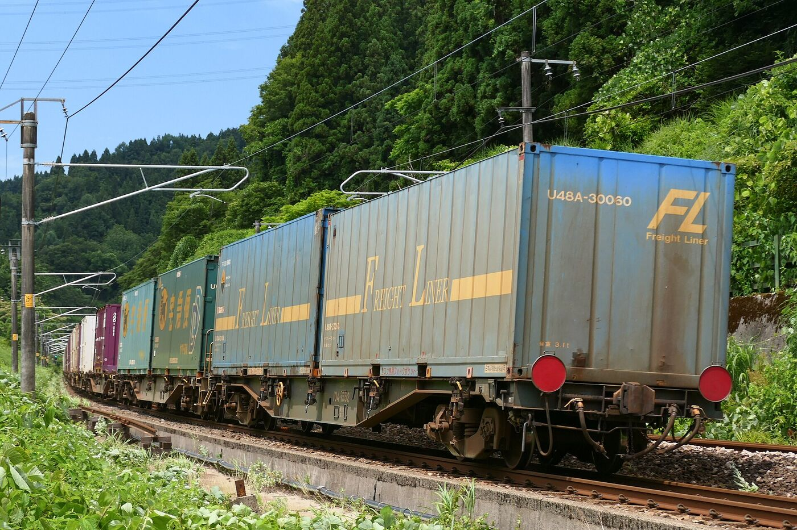

CBAM
EU carbon border reportingInstallation-level embedded-emissions data for your EU buyers, verified and audit-ready, so your shipments aren't priced on punitive default values.
- Data ingestion
- Emissions logic
- Third-party audit
- Share with buyers